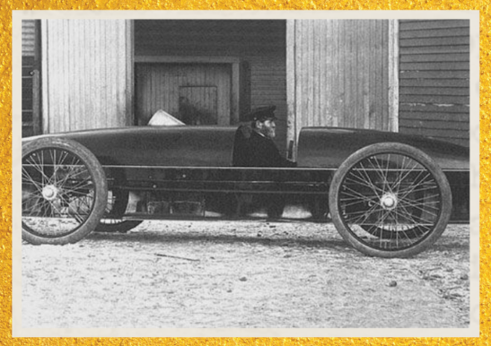

Stanley Steamer “Rocket” (1906)
Carro de Corrida a Vapor
Em 1906, este carro a vapor atingiu 205,5 km/h, quebrando o recorde mundial de velocidade terrestre. Com
motor a vapor de alta pressão e design aerodinâmico, o Rocket simboliza o auge da tecnologia a vapor no
início do século XX.